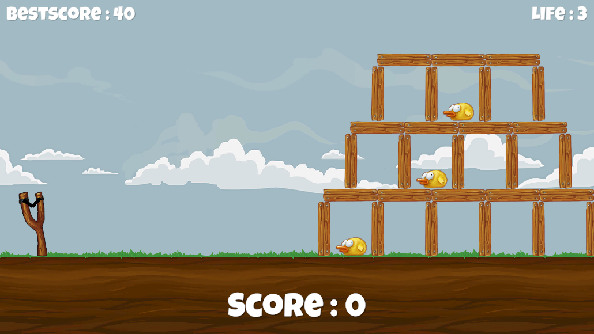
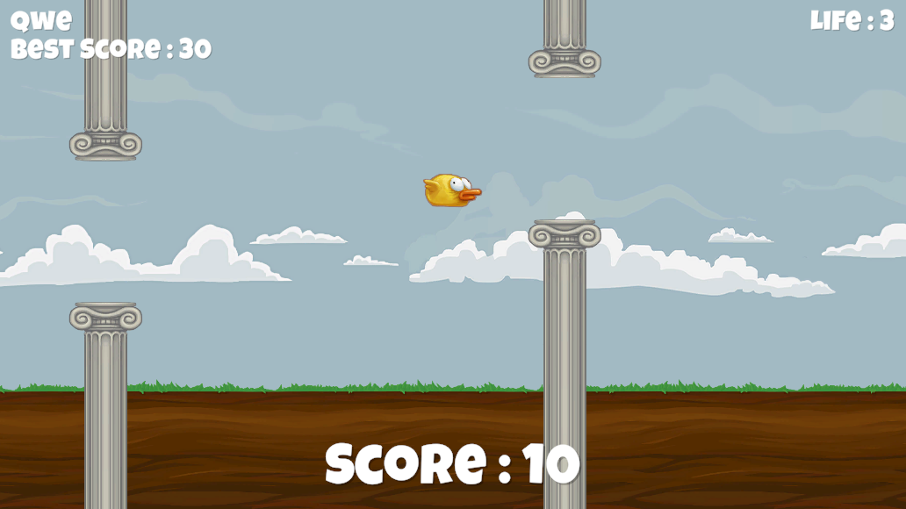

UnityGames
2024-02-21
유니티로 구현한 게임들.
1. Galaga
베지어 곡선을 구현해 적들의 곡선 이동을 구현했습니다.
비동기 작업 처리에는 코루틴을 사용해 최적화를 해주었습니다.

2. Angry Bird
앵그리버드 게임은 랜덤한 구조물을 생성하는데 집중했습니다.
랜덤으로 구조물을 소환할 때, 오브젝트가 강체(Rigidbody) 를 갖는 경우
오브젝트들이 게임에 소환되는 순간 서로 간섭을 받아 무너져 내릴수 있습니다.
그러므로 정확한 좌표를 계산해 정확한 위치에 소환하는 것이 중요했습니다.

3. Flappy Bird
플래피버드 게임에서 가장 중요한 것은 Rigidbody 와 Collider 의 사용이었습니다.
Rigidbody 를 통해 오브젝트를 사실적으로 움직이게 하며 적용되는 모든 물리적인 '힘' 을 관리할수 있습니다.
Collider 는 오브젝트와 다른 오브젝트의 접촉, 충돌을 관리 합니다.
위 두 가지 컴포넌트를 통해서 새의 움직임과 장애물에 대한 충돌처리를 할 수 있었습니다.
